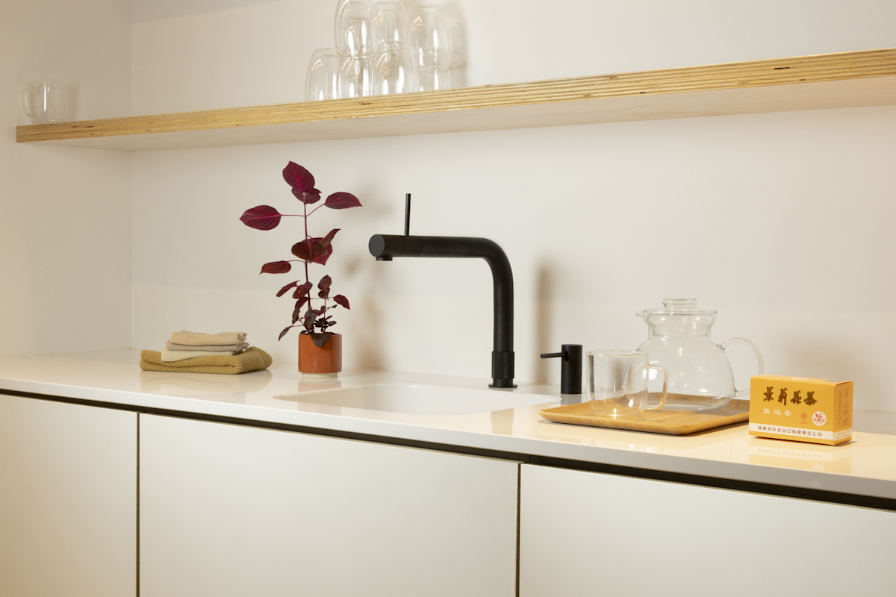

Kitchen Water System
Quooker Front + CUBE
Quooker Front Küchenarmatur in Kombination mit CUBE für fünf Wasserarten.
Preis auf Anfrage
Technische Daten
| Produkttyp | Multifunktionale Küchenarmatur |
| Armatur | Quooker Front mit Bedienung am Auslauf |
| Basiswasser | Kalt und warm |
| Reservoir | 100 °C kochendes Wasser |
| CUBE | Gekühltes stilles und sprudelndes Wasser |
| Wasserarten gesamt | Fünf in Kombination mit CUBE |
| Installation | Reservoir und CUBE unter der Spüle |
| CO₂ | CUBE-CO₂-System |
| Oberflächen | Mehrere Ausführungen laut Hersteller |
Datenhinweis
Die Angaben stammen aus öffentlich zugänglichen Hersteller- und Produktunterlagen. Nicht veröffentlichte Werte wurden nicht geschätzt. Änderungen und Modellvarianten sind möglich.
Technologie und Wasserwissen
Diese Ratgeber erklären die eingesetzten Verfahren, Messwerte und Grenzen unabhängig von einzelnen Herstellerangaben.
Wasserwissen entdecken · Alle Filtertechnologien · Produkte vergleichen